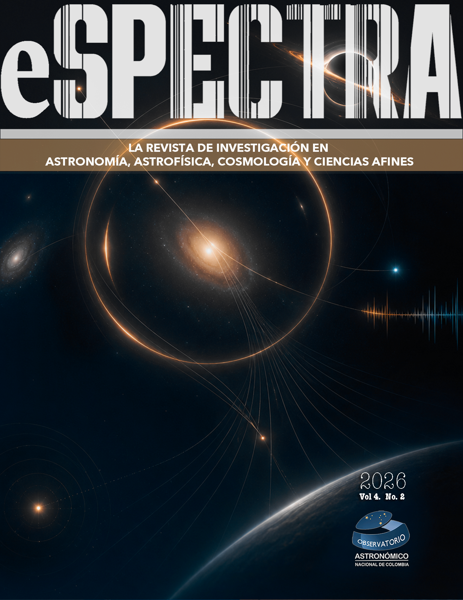
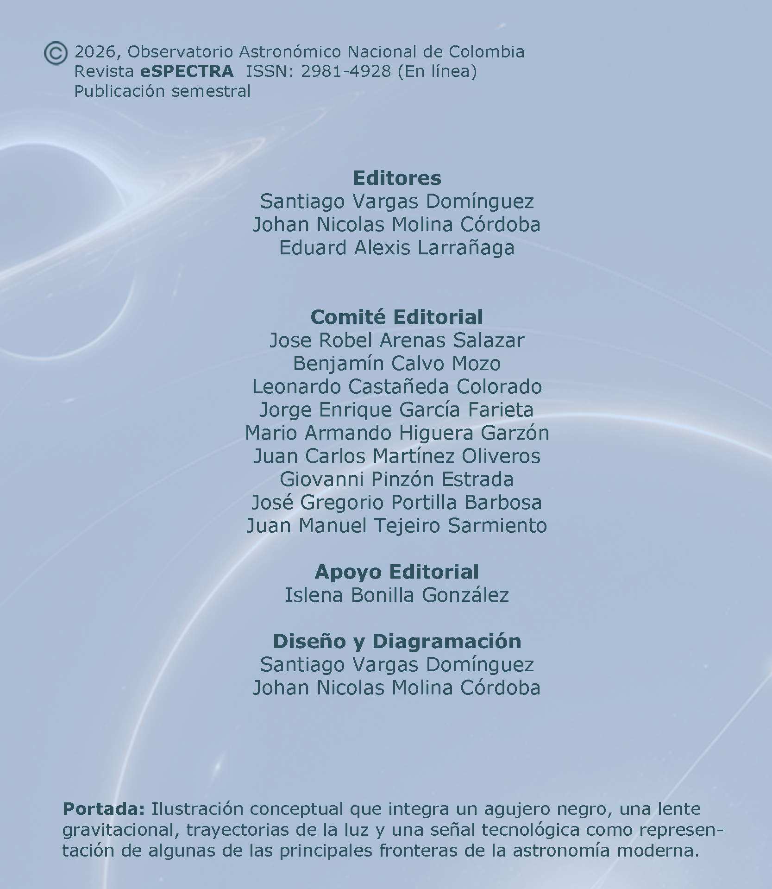

Revista deInvestigación
El Observatorio Astronómico Nacional de Colombia presenta un nuevo número de eSPECTRA, dedicado a difundir investigaciones que reflejan la diversidad y el dinamismo de la astronomía contemporánea. Los artículos de esta edición abarcan temas como agujeros negros, lentes gravitacionales, evolución estelar, herramientas computacionales y la búsqueda de inteligencia extraterrestre, evidenciando la integración entre teoría, observación y simulación numérica.
Agradecemos a autores, revisores y al comité editorial por su compromiso con la calidad científica de la revista, e invitamos a nuestros lectores a descubrir este nuevo volumen, que busca seguir inspirando la exploración y el conocimiento del universo.
La Revista


Revista eSPECTRA, Volumen 4, Número 2 (2026)
Artículos
Reseñas de Eventos
ARTÍCULOS DIVULGATIVOS
Huellas de Colombia en el Sistema Solar
Por: Laura Daniela Jiménez Prada. Miembro de Cúmulo
Los cráteres son la forma más común de cualquier cuerpo planetario con superficie sólida, pero su verdadera importancia va mucho más allá de la apariencia (Martillado, 2011). El análisis detallado de su abundancia y morfología aporta información clave sobre la historia geológica de un planeta; por ejemplo, evaluar la densidad de cráteres en distintas áreas de Marte ha permitido establecer una estratigrafía a gran escala (Barata et al., 2004).
Los cráteres son la forma más común de cualquier cuerpo planetario con superficie sólida, pero su verdadera importancia va mucho más allá de la apariencia (Martillado, 2011). El análisis detallado de su abundancia y morfología aporta información clave sobre la historia geológica de un planeta; por ejemplo, evaluar la densidad de cráteres en distintas áreas de Marte ha permitido establecer una estratigrafía a gran escala (Barata et al., 2004).
LA ENTREVISTA
Beatriz Sabogal: una vida dedicada a comprender las estrellas
En esta edición de eSPECTRA conversamos con Beatriz Sabogal, una destacada protagonista del desarrollo de la astronomía y la ciencia en Colombia. A lo largo de esta entrevista comparte su trayectoria, los desafíos que ha enfrentado y las experiencias que han marcado su carrera, ofreciendo una mirada inspiradora sobre el valor de la investigación, la educación y el compromiso con la construcción del conocimiento.
Contáctanos
Aquí nos encuentras
¡Queremos mantenernos en contacto contigo!
Síguenos en nuestras redes sociales y metaverso
Síguenos en nuestras redes sociales y metaverso